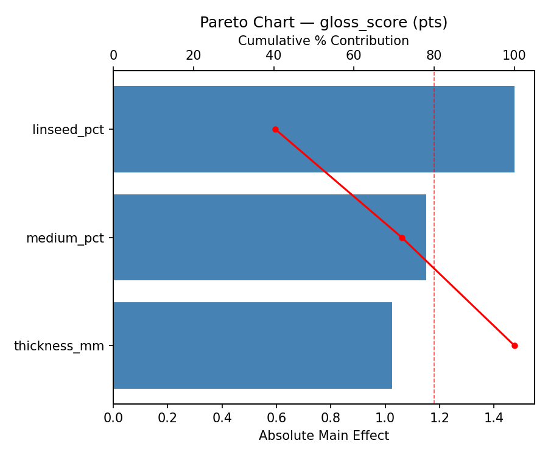
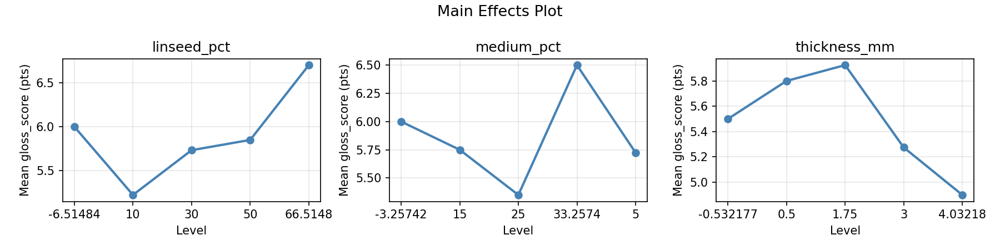
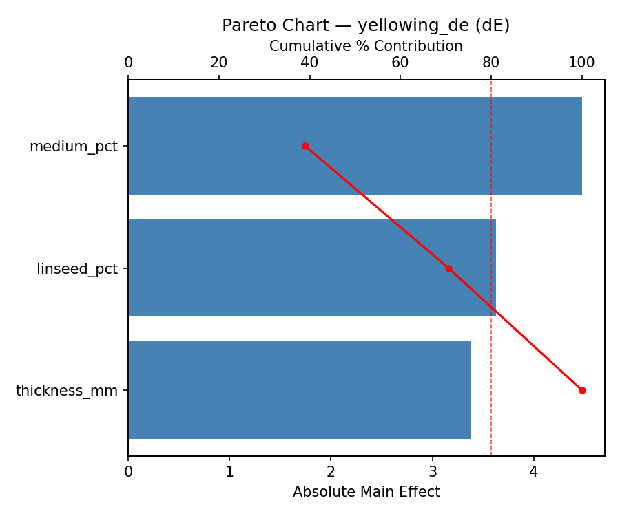
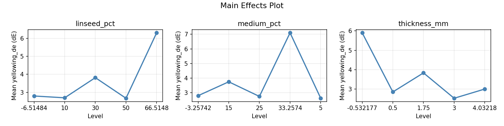
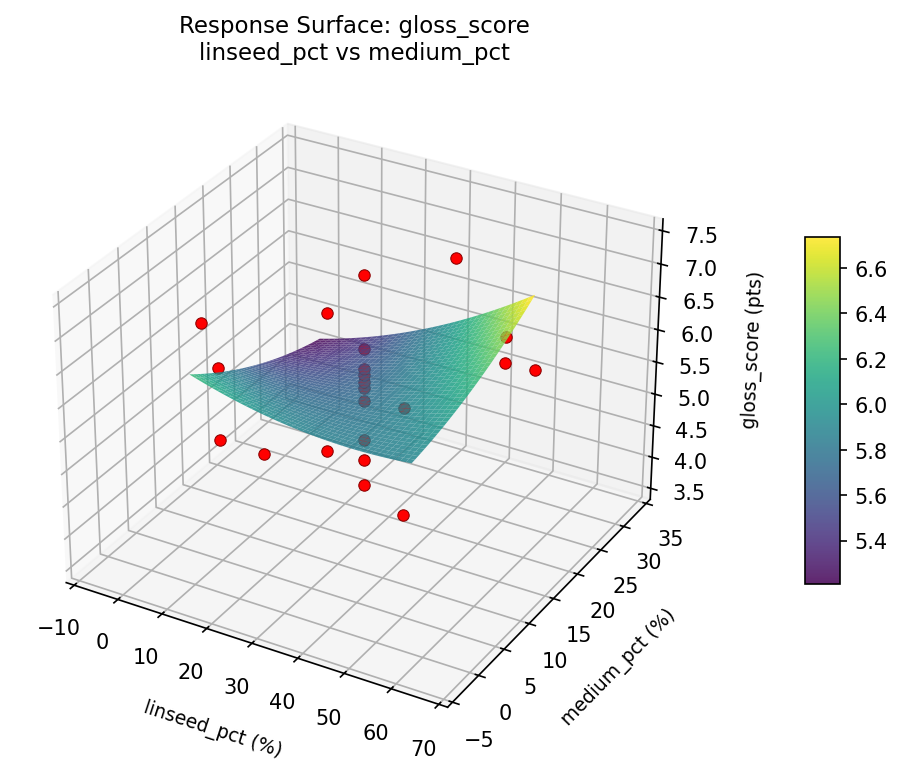
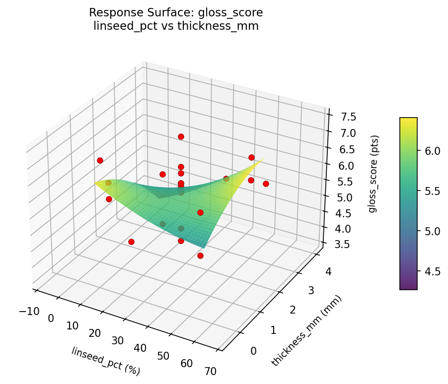
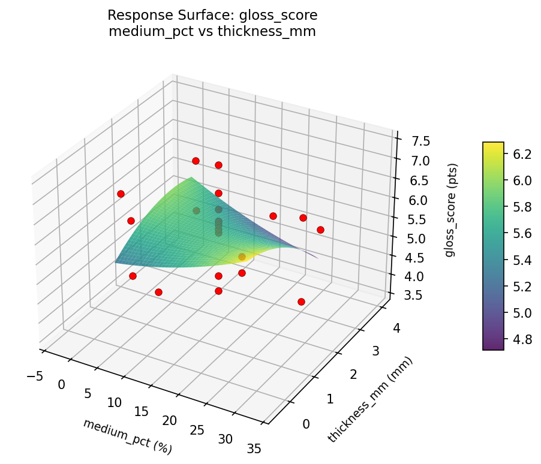
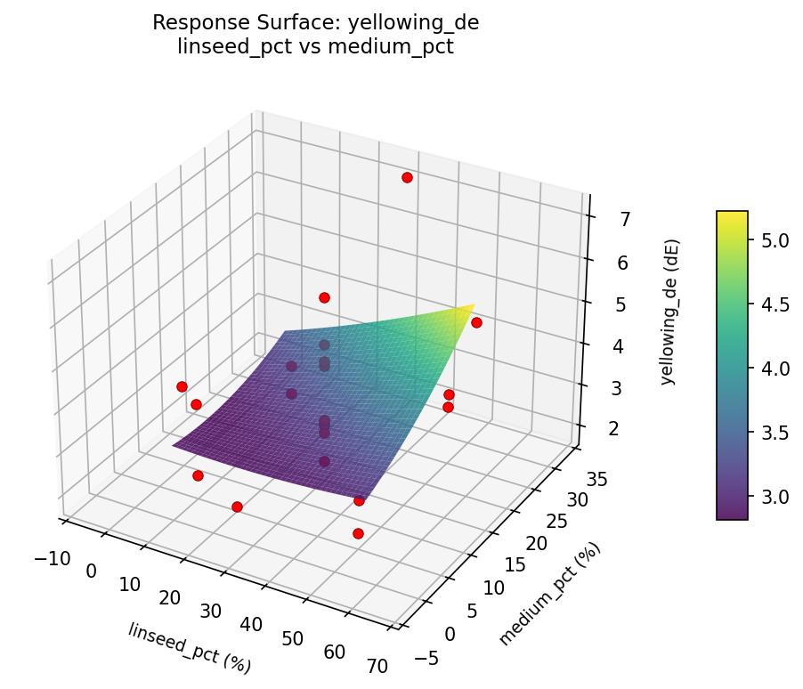
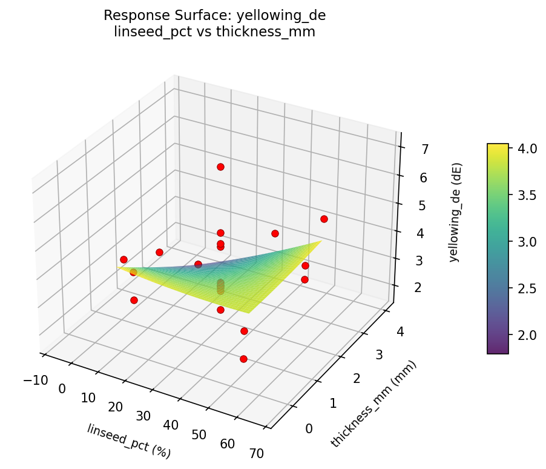
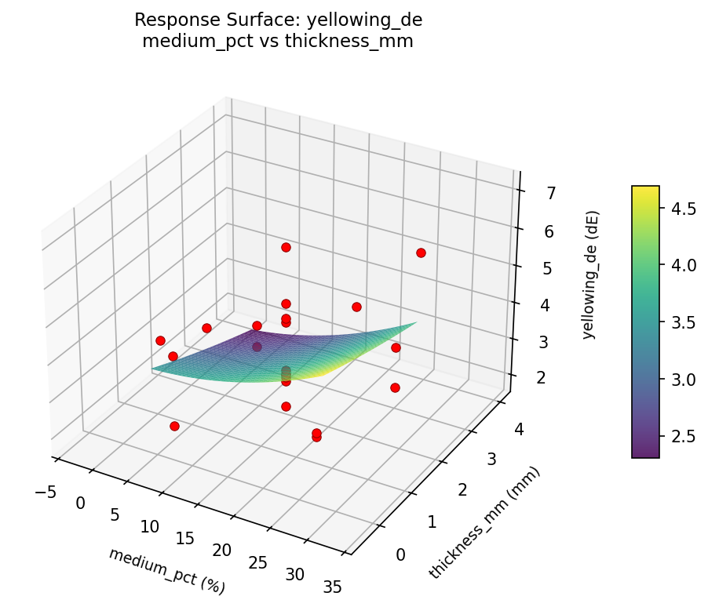

Summary
This experiment investigates oil paint drying medium. Central composite design to maximize gloss and minimize yellowing by tuning linseed oil ratio, drying medium percentage, and layer thickness.
The design varies 3 factors: linseed pct (%), ranging from 10 to 50, medium pct (%), ranging from 5 to 25, and thickness mm (mm), ranging from 0.5 to 3.0. The goal is to optimize 2 responses: gloss score (pts) (maximize) and yellowing de (dE) (minimize). Fixed conditions held constant across all runs include pigment = titanium_white, support = linen_canvas.
A Central Composite Design (CCD) was selected to fit a full quadratic response surface model, including curvature and interaction effects. With 3 factors this produces 22 runs including center points and axial (star) points that extend beyond the factorial range.
Quadratic response surface models were fitted to capture potential curvature and factor interactions. The RSM contour plots below visualize how pairs of factors jointly affect each response.
Key Findings
For gloss score, the most influential factors were linseed pct (40.4%), medium pct (31.5%), thickness mm (28.1%). The best observed value was 7.4 (at linseed pct = 30, medium pct = 15, thickness mm = 1.75).
For yellowing de, the most influential factors were medium pct (39.0%), linseed pct (31.6%), thickness mm (29.4%). The best observed value was 1.9 (at linseed pct = 66.5148, medium pct = 15, thickness mm = 1.75).
Recommended Next Steps
- Run confirmation experiments at the predicted optimal settings to validate the model.
- Consider whether any fixed factors should be varied in a future study.
Experimental Setup
Factors
| Factor | Low | High | Unit |
|---|
linseed_pct | 10 | 50 | % |
medium_pct | 5 | 25 | % |
thickness_mm | 0.5 | 3.0 | mm |
Fixed: pigment = titanium_white, support = linen_canvas
Responses
| Response | Direction | Unit |
|---|
gloss_score | ↑ maximize | pts |
yellowing_de | ↓ minimize | dE |
Configuration
{
"metadata": {
"name": "Oil Paint Drying Medium",
"description": "Central composite design to maximize gloss and minimize yellowing by tuning linseed oil ratio, drying medium percentage, and layer thickness"
},
"factors": [
{
"name": "linseed_pct",
"levels": [
"10",
"50"
],
"type": "continuous",
"unit": "%"
},
{
"name": "medium_pct",
"levels": [
"5",
"25"
],
"type": "continuous",
"unit": "%"
},
{
"name": "thickness_mm",
"levels": [
"0.5",
"3.0"
],
"type": "continuous",
"unit": "mm"
}
],
"fixed_factors": {
"pigment": "titanium_white",
"support": "linen_canvas"
},
"responses": [
{
"name": "gloss_score",
"optimize": "maximize",
"unit": "pts"
},
{
"name": "yellowing_de",
"optimize": "minimize",
"unit": "dE"
}
],
"settings": {
"operation": "central_composite",
"test_script": "use_cases/282_oil_paint_drying/sim.sh"
}
}
Experimental Matrix
The Central Composite Design produces 22 runs. Each row is one experiment with specific factor settings.
| Run | linseed_pct | medium_pct | thickness_mm |
|---|
| 1 | 30 | 15 | 1.75 |
| 2 | 50 | 5 | 3 |
| 3 | 10 | 25 | 0.5 |
| 4 | 30 | 33.2574 | 1.75 |
| 5 | 30 | 15 | 1.75 |
| 6 | -6.51484 | 15 | 1.75 |
| 7 | 30 | 15 | -0.532177 |
| 8 | 30 | 15 | 1.75 |
| 9 | 50 | 25 | 0.5 |
| 10 | 66.5148 | 15 | 1.75 |
| 11 | 30 | 15 | 1.75 |
| 12 | 30 | -3.25742 | 1.75 |
| 13 | 30 | 15 | 1.75 |
| 14 | 10 | 5 | 3 |
| 15 | 30 | 15 | 1.75 |
| 16 | 50 | 5 | 0.5 |
| 17 | 30 | 15 | 4.03218 |
| 18 | 50 | 25 | 3 |
| 19 | 30 | 15 | 1.75 |
| 20 | 10 | 5 | 0.5 |
| 21 | 10 | 25 | 3 |
| 22 | 30 | 15 | 1.75 |
Step-by-Step Workflow
1
Preview the design
$ python doe.py info --config use_cases/282_oil_paint_drying/config.json
2
Generate the runner script
$ python doe.py generate --config use_cases/282_oil_paint_drying/config.json \
--output use_cases/282_oil_paint_drying/results/run.sh --seed 42
3
Execute the experiments
$ bash use_cases/282_oil_paint_drying/results/run.sh
4
Analyze results
$ python doe.py analyze --config use_cases/282_oil_paint_drying/config.json
5
Get optimization recommendations
$ python doe.py optimize --config use_cases/282_oil_paint_drying/config.json
6
Generate the HTML report
$ python doe.py report --config use_cases/282_oil_paint_drying/config.json \
--output use_cases/282_oil_paint_drying/results/report.html
Features Exercised
| Feature | Value |
|---|
| Design type | central_composite |
| Factor types | continuous (all 3) |
| Arg style | double-dash |
| Responses | 2 (gloss_score ↑, yellowing_de ↓) |
| Total runs | 22 |
Analysis Results
Generated from actual experiment runs using the DOE Helper Tool.
Response: gloss_score
Top factors: linseed_pct (40.4%), medium_pct (31.5%), thickness_mm (28.1%).
Pareto Chart

Main Effects Plot

Response: yellowing_de
Top factors: medium_pct (39.0%), linseed_pct (31.6%), thickness_mm (29.4%).
Pareto Chart

Main Effects Plot

Response Surface Plots
3D surfaces fitted with quadratic RSM. Red dots are observed data points.
gloss score linseed pct vs medium pct

gloss score linseed pct vs thickness mm

gloss score medium pct vs thickness mm

yellowing de linseed pct vs medium pct

yellowing de linseed pct vs thickness mm

yellowing de medium pct vs thickness mm

Full Analysis Output
RSM surface: rsm_gloss_score_linseed_pct_vs_medium_pct.png
RSM surface: rsm_gloss_score_linseed_pct_vs_thickness_mm.png
RSM surface: rsm_gloss_score_medium_pct_vs_thickness_mm.png
RSM surface: rsm_yellowing_de_linseed_pct_vs_medium_pct.png
RSM surface: rsm_yellowing_de_linseed_pct_vs_thickness_mm.png
RSM surface: rsm_yellowing_de_medium_pct_vs_thickness_mm.png
=== Main Effects: gloss_score ===
Factor Effect Std Error % Contribution
--------------------------------------------------------------
linseed_pct 1.4750 0.1856 40.4%
medium_pct 1.1500 0.1856 31.5%
thickness_mm 1.0250 0.1856 28.1%
=== Summary Statistics: gloss_score ===
linseed_pct:
Level N Mean Std Min Max
------------------------------------------------------------
-6.51484 1 6.0000 0.0000 6.0000 6.0000
10 4 5.2250 1.1730 3.6000 6.3000
30 12 5.7333 0.8659 4.2000 7.4000
50 4 5.8500 0.6952 4.9000 6.5000
66.5148 1 6.7000 0.0000 6.7000 6.7000
medium_pct:
Level N Mean Std Min Max
------------------------------------------------------------
-3.25742 1 6.0000 0.0000 6.0000 6.0000
15 12 5.7500 0.8837 4.2000 7.4000
25 4 5.3500 1.1818 3.6000 6.2000
33.2574 1 6.5000 0.0000 6.5000 6.5000
5 4 5.7250 0.7932 4.9000 6.5000
thickness_mm:
Level N Mean Std Min Max
------------------------------------------------------------
-0.532177 1 5.5000 0.0000 5.5000 5.5000
0.5 4 5.8000 0.6377 4.9000 6.3000
1.75 12 5.9250 0.8561 4.2000 7.4000
3 4 5.2750 1.2366 3.6000 6.5000
4.03218 1 4.9000 0.0000 4.9000 4.9000
=== Main Effects: yellowing_de ===
Factor Effect Std Error % Contribution
--------------------------------------------------------------
medium_pct 4.4750 0.3048 39.0%
linseed_pct 3.6250 0.3048 31.6%
thickness_mm 3.3750 0.3048 29.4%
=== Summary Statistics: yellowing_de ===
linseed_pct:
Level N Mean Std Min Max
------------------------------------------------------------
-6.51484 1 2.8000 0.0000 2.8000 2.8000
10 4 2.7000 0.8042 2.1000 3.8000
30 12 3.8167 1.5153 2.0000 7.1000
50 4 2.6750 0.5560 1.9000 3.2000
66.5148 1 6.3000 0.0000 6.3000 6.3000
medium_pct:
Level N Mean Std Min Max
------------------------------------------------------------
-3.25742 1 2.8000 0.0000 2.8000 2.8000
15 12 3.7500 1.3681 2.0000 6.3000
25 4 2.7500 0.4655 2.1000 3.2000
33.2574 1 7.1000 0.0000 7.1000 7.1000
5 4 2.6250 0.8539 1.9000 3.8000
thickness_mm:
Level N Mean Std Min Max
------------------------------------------------------------
-0.532177 1 5.9000 0.0000 5.9000 5.9000
0.5 4 2.8500 0.7767 1.9000 3.8000
1.75 12 3.8333 1.5796 2.0000 7.1000
3 4 2.5250 0.5315 2.1000 3.2000
4.03218 1 3.0000 0.0000 3.0000 3.0000
Pareto chart (gloss_score): use_cases/282_oil_paint_drying/results/analysis/pareto_gloss_score.png
Pareto chart (yellowing_de): use_cases/282_oil_paint_drying/results/analysis/pareto_yellowing_de.png
Main effects (gloss_score): use_cases/282_oil_paint_drying/results/analysis/main_effects_gloss_score.png
Main effects (yellowing_de): use_cases/282_oil_paint_drying/results/analysis/main_effects_yellowing_de.png
Optimization Recommendations
=== Optimization: gloss_score ===
Direction: maximize
Best observed run: #9
linseed_pct = 30
medium_pct = 15
thickness_mm = 1.75
Value: 7.4
RSM Model (linear, R² = 0.1252, Adj R² = -0.0206):
Coefficients:
intercept +5.7182
linseed_pct +0.0472
medium_pct -0.1586
thickness_mm -0.3293
RSM Model (quadratic, R² = 0.2908, Adj R² = -0.2411):
Coefficients:
intercept +5.6800
linseed_pct +0.0472
medium_pct -0.1586
thickness_mm -0.3293
linseed_pct*medium_pct +0.3125
linseed_pct*thickness_mm -0.1125
medium_pct*thickness_mm +0.1375
linseed_pct^2 -0.0059
medium_pct^2 +0.2191
thickness_mm^2 -0.1559
Curvature analysis:
medium_pct coef=+0.2191 convex (has a minimum)
thickness_mm coef=-0.1559 concave (has a maximum)
linseed_pct coef=-0.0059 negligible curvature
Notable interactions:
linseed_pct*medium_pct coef=+0.3125 (synergistic)
Predicted optimum (from linear model):
linseed_pct = 30
medium_pct = 15
thickness_mm = -0.532177
Predicted value: 6.3194
Model quality: Weak fit — consider adding center points or using a different design.
Factor importance:
1. thickness_mm (effect: 2.7, contribution: 51.5%)
2. linseed_pct (effect: 1.3, contribution: 25.8%)
3. medium_pct (effect: 1.2, contribution: 22.7%)
=== Optimization: yellowing_de ===
Direction: minimize
Best observed run: #20
linseed_pct = 66.5148
medium_pct = 15
thickness_mm = 1.75
Value: 1.9
RSM Model (linear, R² = 0.0557, Adj R² = -0.1017):
Coefficients:
intercept +3.4727
linseed_pct -0.0507
medium_pct +0.2488
thickness_mm -0.3139
RSM Model (quadratic, R² = 0.4856, Adj R² = 0.0998):
Coefficients:
intercept +3.1504
linseed_pct -0.0507
medium_pct +0.2488
thickness_mm -0.3139
linseed_pct*medium_pct +0.1125
linseed_pct*thickness_mm -0.9375
medium_pct*thickness_mm -0.1875
linseed_pct^2 -0.1938
medium_pct^2 +0.6912
thickness_mm^2 -0.0138
Curvature analysis:
medium_pct coef=+0.6912 convex (has a minimum)
linseed_pct coef=-0.1938 concave (has a maximum)
thickness_mm coef=-0.0138 negligible curvature
Notable interactions:
linseed_pct*thickness_mm coef=-0.9375 (antagonistic)
Predicted optimum (from quadratic model):
linseed_pct = 30
medium_pct = 33.2574
thickness_mm = 1.75
Predicted value: 5.9085
Model quality: Weak fit — consider adding center points or using a different design.
Factor importance:
1. medium_pct (effect: 3.5, contribution: 47.4%)
2. linseed_pct (effect: 2.0, contribution: 27.1%)
3. thickness_mm (effect: 1.8, contribution: 25.4%)